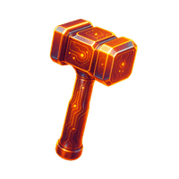
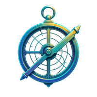
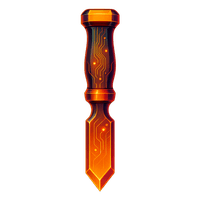
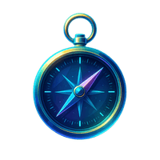

cyan
One property per card
The tint reaches the shadow as well as the overlay. Tint only one and it collapses into a coloured smudge.

hologram ui components
tap to activate
A library of hologram and HUD parts for a dark page. Step rails, panels that boot up, a loading state that draws a cell, a modal surface, and a particle trace for media.
An arc of light runs the boundary once, struck from wherever your pointer crossed or your finger landed, then breaks into particles. Every value in the HUD is read off the media element at runtime.

The same treatment over video, plus a play affordance that hides on play and returns on pause. The native controls stay for scrubbing.
One rail, any number of stops, each reported on a
holobar:change event. Here it drives a descent through four
scales of the brain: drag it, tap a tick, or arrow-key from the whole organ
down to a single spike.
≈ 15 cm
One label, one number, one line of context. Say something true, and the ornament stops being ornament.
this one cell receives
165
mossy fiber synapses, from only 6 fibers. A single terminal makes dozens of contacts on one thorn.
A hairline draws out from under a heading when it first comes into view, and draws again when you point at it or tap it.
Two bright heads run the border in opposite directions and meet, an inner backlight swells, and the panel resolves out of a blur. Once when it first comes on screen, and again every time you point at it or tap it. The masthead at the top of this page is the same component.
A thin line passes across a panel once when you point at it, tab into it or tap it, whatever the panel's height.

Near black ink instead of tinted glass, so the render pops. The rim and backlight live entirely in the box shadow, so nothing moves and the image is never repainted. Point at a card, or tap it, and a bright head runs the perimeter.

The EyeWire II sign in modal, reproduced. A drifting particle field, a
cycling gradient border, two counter rotating rings, and a materialise that
settles through a soft overshoot. A real <dialog> opened
with showModal, so focus is trapped and Escape closes it.
This is a visual component only. No authentication, no form element, nothing to sign into, and no request goes anywhere.
A cell draws itself in while you wait, the basal arbor half a cycle behind the apical one. The bar reports a real count when you have one, and goes indeterminate when you do not, rather than inventing a number.
loading meshes
no total yet
A loop for a screen nobody is standing at. It walks a set of panels by itself, stops the moment somebody touches the page, and starts again once the room has been quiet for a while. Every step carries its own dwell, so a panel with something still happening in it holds longer than one you finish reading in three seconds. From the museum wall edition of whatisabrain.com.
Drag the rail and the loop holds where you put it, because touching the box counts as somebody being present. It resumes after a quiet spell.
The EyeWire II researcher profile, the real component carried across whole: the tabs, the achievement badges, the streak and the trophy case. Open it, then click any badge for its detail. A visual component: no account, nothing to sign into.
visual component only
Amy Sterling
@amy · 48,732 edits · 7 day streak




The success state from EyeWire II Brain Quest: a toast and a confetti burst fired together. The card announces through a live region, dismisses on a timer that pauses while you point at it or tap it, and the burst respects reduced motion.
Each card sets one property, --holotint, and that single value
colours both the corner glow and the shadow it pools as it lifts. Point at one,
or tap it, and it comes up.
cyan
The tint reaches the shadow as well as the overlay. Tint only one and it collapses into a coloured smudge.
violet
Everything the pointer gets, a keyboard and a finger get too. The card lifts on focus-within and on a tap.
warm
A cool field with a single warm card in it. Two warm accents and the grid stops reading as an instrument.
A toolbar of icon buttons with rest, hover, focus, pressed and selected
states. Real buttons, inline SVG, no !important. The third is a
toggle and reports with aria-pressed.
A callout that anchors to a target, flips to the side that fits, clamps into the viewport, then slides its beak to keep pointing. Escape dismisses, the arrows step, and the page scrolls the whole time.
<link rel="stylesheet" href="hologram.css">
<nav class="holorail" data-holorail="h2"></nav>
<div class="holobar" data-steps="10" data-step="8"></div>
<section class="holoboot holosweep"> ... </section>
<figure class="holocard"><img src="render.jpg" alt=""></figure>
<figure data-hud="optional measured value">
<div class="holoframe">
<canvas class="trace"></canvas>
<img src="render.jpg" alt="">
</div>
</figure>
<script src="hologram.js"></script>
<script src="hologram-tap.js"></script>
Put the canvas.trace before the media. Everything decorative
is created at runtime. The second script is what makes every hover treatment
reachable by tap, and it belongs on any page that loads any part of this
library. Read README.md for the reasoning, the
tunables, and the compositing traps that cost real time.
This card and the toast are the same panel underneath, pulled out once as .holopanel instead of copied a fourth time.
Press this after the tour for a toast and a confetti burst together, the way Brain Quest fires them.
Real buttons with rest, hover, pressed and selected states, and no !important anywhere in the file.